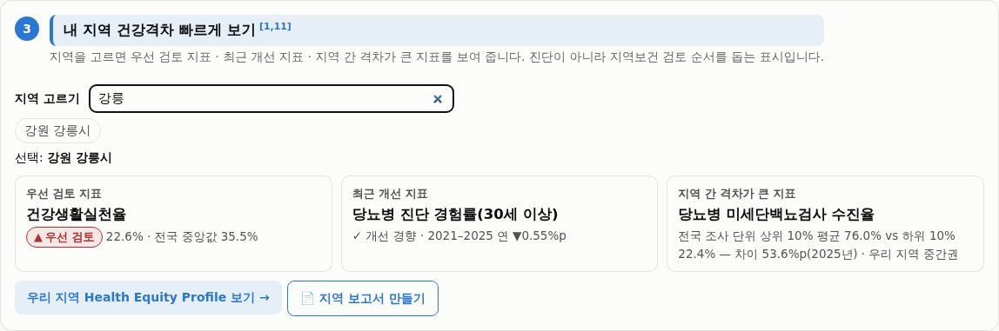
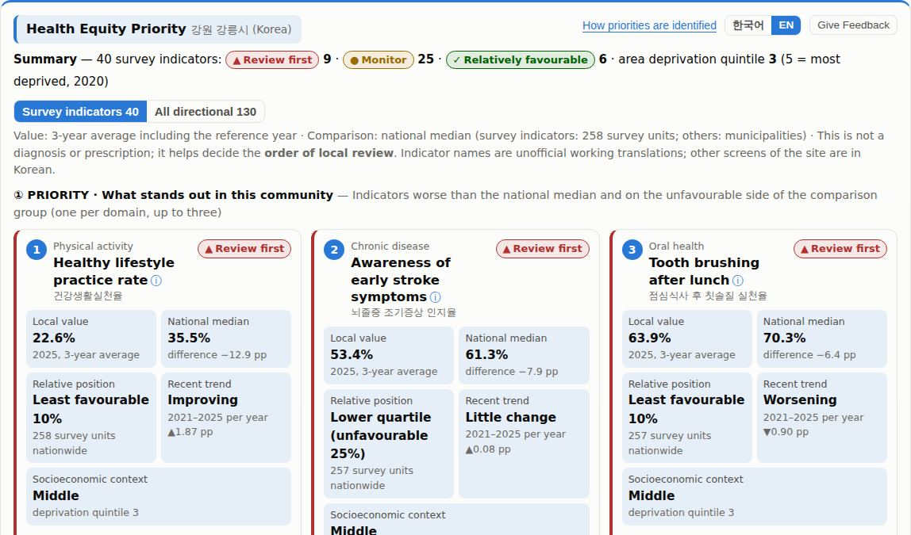
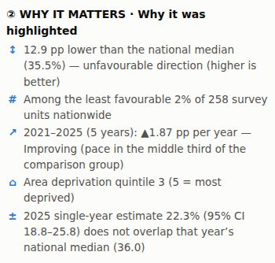
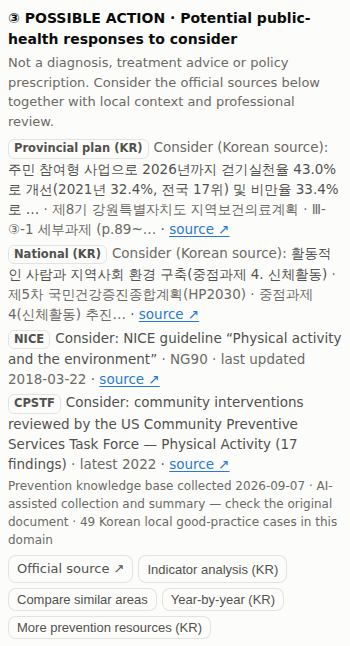
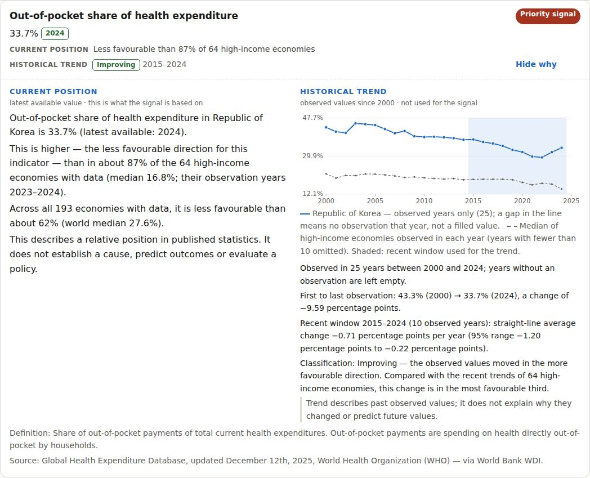

90-second tour
Real screenshots of the running site, with a link to open each screen. Korea is the detailed deployment; the last step shows the same framework applied to open global data.
- 1 · FIND A COMMUNITY
Choose a municipality or health-centre area
Search any of the {{N_SGG}} municipalities or {{N_HC}} survey units. The example is Gangneung-si (Korean home screen).
Open the home screen →
- 2 · IDENTIFY WHAT TO REVIEW FIRST
Up to three indicators, one per domain
Each indicator shows the local value, the national median, the relative position, the recent trend and deprivation context. Tiers: Review first, Monitor, Relatively favourable, Insufficient data.
Open this screen →
- 3 · SEE WHY
Reasons computed from the data
Gap from the national median, position among comparable areas, recent trend, deprivation (side by side, never as a cause) and whether the 95% confidence interval excludes the median.
Open this screen →
- 4 · REVIEW POSSIBLE ACTION
Official guidance, not generated advice
Links to Korean national and provincial plans, WHO, NICE and CPSTF documents, with collection dates. If nothing is linked, the card says so.
Open this screen →
- 5 · SCALE THE FRAMEWORK
Same rules, open global data
The global prototype applies the framework to World Bank data from {{G_ECON}} countries and economies. Current position and observed historical trend are shown separately.
Open the global prototype →
What is real today
Counted from the data files the site loads (Competition Evidence Pack, {{EVIDENCE_DATE}}). Numbers at different geographic levels are not added or multiplied.
Korea detailed local deployment
Global prototype portability test
Automated checks: {{QA_LINE}}.
What it does not do
It is a decision-support and screening tool for identifying indicators that deserve closer review.
- Does not diagnose disease
- Does not predict future disease
- Does not estimate causal policy effects
- Does not automatically recommend public-budget allocation
- Does not claim neighbouring ranks are meaningfully different
- Does not replace local public-health judgement
Built in Korea. Tested as a portable framework globally.
Korea — detailed local deployment
- {{N_SURVEY}} survey indicators across {{N_HC}} survey units and {{N_ADMIN}} administrative / derived indicators across {{N_SGG}} municipalities, {{Y0}}–{{Y1}}.
- Priority, reasons and linked official guidance for one community at a time.
- Survey uncertainty (95% confidence intervals, relative standard error) built into the rules.
Global prototype — portability test
- Prototype applied to data from {{G_ECON}} countries and economies, using {{G_IND}} standardized WDI indicators.
- Each value is compared with economies in the same World Bank income group.
- Observed historical trends shown separately from the current position; no interpolation.
- Evidence links technically verified ({{G_EV}} sources); expert relevance review still pending.
- National averages only: it does not show differences within countries.
The global prototype is not deployed in, used by or endorsed by any country or organisation. Global methodology
The problem
In Korea, the data a local public-health team needs for one area are published by different agencies in different systems: the Korea Community Health Survey (Korea Disease Control and Prevention Agency), cause-of-death statistics (Statistics Korea), and screening and insurance statistics (National Health Insurance Service). Each has its own tables, years and geographic units — the survey is reported for {{N_HC}} survey units, most administrative statistics for {{N_SGG}} municipalities.
Local governments prepare four-year local health plans; preparation of the next cycle (2027–2030) begins in the second half of 2026. Comparing an area across sources means opening several systems, reconciling units and years, and judging whether a difference is larger than survey uncertainty.
How priorities are identified
For each indicator the tool combines four components scored 0–1 and averages those available. Missing parts are dropped and the weights renormalized; they are never set to zero.
- Gap (35%) — direction-aware relative difference from the national median.
- Relative position (25%) — share of comparable areas with a better value.
- Recent trend (20%) — five-year slope, by tertile of the comparison group.
- Socioeconomic context (20%) — area deprivation quintile, shown side by side, never as a cause.
“Review first” also requires the lower 25%, a score of at least 0.55, a 95% confidence interval that excludes the national median, and a relative standard error of 20% or less. Only tiers are shown, not scores. No prediction models or causal inference are used. Full rules: English overview · data validation · indicator metadata.
Data sources
| Source | Role in the tool | Indicators |
|---|
Most administrative indicators were obtained from their original producers via a public research database (Kim D. et al., v1.7, KDCA archive); mortality 2018–2025 was re-checked against Statistics Korea tables. Linked guidance: Korean national and provincial health plans, WHO, NICE (UK) and the US Community Preventive Services Task Force.
Evidence of use and next validation
No user-testing or impact evidence yet, and no usage figures are claimed. {{REVIEW_STATUS}}
- Planned: a structured test with 5–8 local public-health practitioners (find their area, identify one priority, explain why, open the evidence, compare with another area).
- The in-app “Give Feedback” form records answers locally (copy, email or .json/.txt file); nothing is sent to a server.
- Independent methodological review, published only with the reviewer’s consent.
Known limitations
- Korean interface except this page, the English overview and the Health Equity Priority card.
- Survey indicators carry sampling error; neighbouring ranks may not differ meaningfully.
- No programme input or output data, so the tool cannot evaluate programme performance or effects.
- Healthy life expectancy and the deprivation index are approximations computed for this project, not official statistics.
- The prevention knowledge base was collected and summarized with AI assistance; original documents are linked and should be checked.